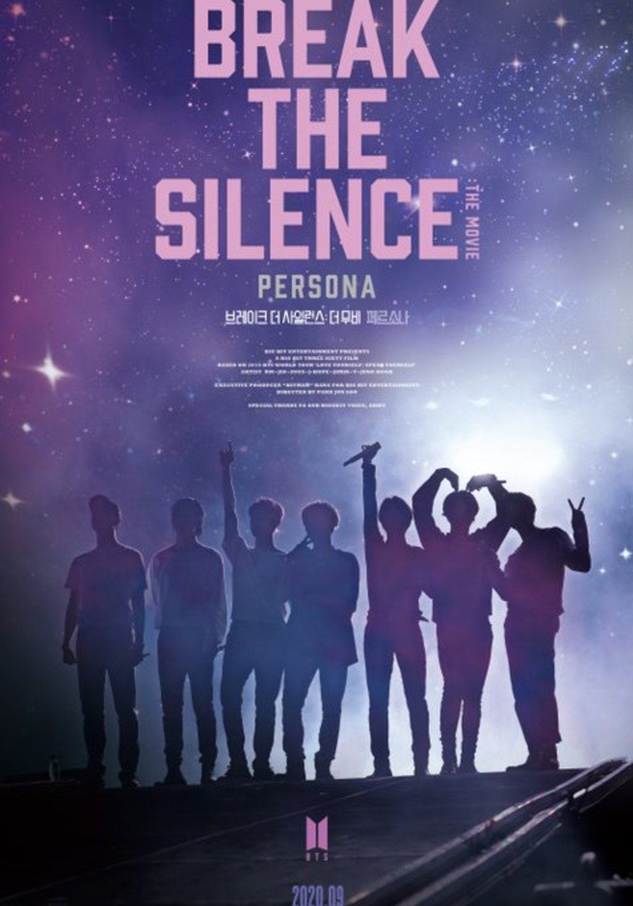

Selain Break the Silence, Ini Film Dokumenter Lain tentang Perjalanan Karier BTS
Konten ini diproduksi oleh kumparan K-Pop
6 November 2020 15:28

BTS Break The Silence dok Twitter @bts_bighit
Di balik kesuksesan BTS, banyak kisah perjuangan yang telah mereka lewati. Butuh pengorbanan seperti latihan berjam-jam, mengatasi beban mental, sampai harus selalu tampil maksimal di depan para ARMY--julukan bagi fans.
Tapi berkat pengorbanan ini, BTS berhasil menggapai mimpi dan mendapat beragam penghargaan, meraih prestasi, serta merangkai momen bahagia bersama penggemar.
Nah, kisah BTS ini telah dibungkus dalam film dokumenter inspiratif, salah satunya adalah Break The Silence: The Movie yang baru dirilis. Tapi, ia memutuskan untuk merelakan cuti itu dan tinggal di pangkalan militer untuk melatih para tentara junior.
Burn the Stage
Pada 2018, BTS untuk pertama kalinya meluncurkan film dokumenter bertajuk Burn the Stage: The Movie. Dokumenter ini kemudian dirilis dalam Burn the Stage the Series yang terdiri dari delapan episode.
Di Burn the Stage, Jimin cs menujukkan sejumlah highlight dari perjalanan karier mereka pada era Wings Tour, termasuk adegan-adegan di balik panggung dan acara penghargaan. Seperti saat hadir di Billboard Music Awards 2017, sampai peristiwa ketika Jin dan V BTS bertengkar.
BTS Festa 2019. Foto: Facebook/Bangtan Official
Ketujuh pelantun Idol ini juga membagikan cerita soal kesulitan, kebahagiaan, dan prinsip mereka saat mencapai ketenaran dalam wawancara ekslusif. Berhasil meraih keuntungan kotor lebih dari 50 miliar, Burn the Stage: The Movie telah mengalahkan dokumenter One Direction yang sukses pada 2014.
Tur konser BTS yakni Love Yourself yang digelar pada 2019 telah mendunia. Mereka membawakan 62 konser di 16 negara dengan kapasitas penonton yang besar.
Kisah perjalanan Love Yourself inilah yang diangkat dalam Bring the Soul. Pada hari setelah konser terakhir tur Eropa di Paris, BTS menceritakan pengalaman mereka saat tampil di kota-kota baru, sekaligus di depan jutaan fans mancanegara.
BTS juga kembali membagikan kisah pencarian jati diri, alasan bermusik, arti fans, dan apa yang membuat mereka terus bertahan sebagai idola. Dilansir Variety, Bring the Soul: The Movie telah terjual lebih dari 2,5 juta tiket bioskop di lebih 112 wilayah di seluruh dunia.
Film Dokumenter BTS Break the Silence Sedang Tayang
Mengangkat tema 'persona', Break the Silence menampilkan kelanjutan perjalanan BTS selama 351 hari dari tur dunia Love Yourself hingga Speak Yourself.
Kedua tur tersebut berlangsung dari Agustus 2018 hingga April 2019 di Seoul, Los Angeles, Chicago, New York, São Paulo, London, Paris, Osaka, Shizuoka, sampai Riyadh.
Break the Silence sebelumnya sudah dibuat dalam versi serial berbayar. Tapi, sejumlah adegan baru telah ditambahkan ke dalam versi film yang digarap secara lebih sinematik.
Break the Silence: The Movies tayang di bioskop di lebih dari 70 negara. Mulai dari Korea Selatan, Amerika Serikat, Australia, Prancis, Hong Kong, termasuk Indonesia.
BTS Break the Silence: The Movie telah tayang di beberapa bioskop Indonesia sejak 5 November 2020.